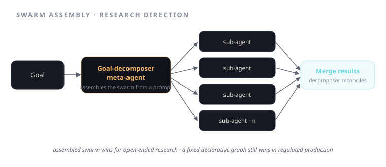

Swarm Assembly: Goal-Decomposer Meta-Agents and Prompt-Driven Coordination
A research note on agents that build their own swarm from a prompt — where that helps, where a fixed graph still wins, and what's genuinely unsolved.
Most production agent systems are hand-drawn. A human looks at a problem, decides on seven or nine specialists, wires the handoffs, and ships a fixed graph. That's the right call when the problem is stable — I'd defend it for underwriting all day, because the shape of a submission doesn't change week to week. But it raises an obvious question: if the agents are capable enough to do the work, why isn't one of them capable enough to design the team? This note is about that question. It's a research direction, neuswarm-research — a hackathon paper and a set of reference primitives — not a production system, and I want to be precise about the line.
The premise of swarm assembly is to move the decomposition itself inside the system. You give a meta-agent a goal in natural language. It decomposes the goal into subtasks, decides what specialists the subtasks need, assembles a swarm of sub-agents to match, and coordinates them to a result. The agent graph stops being a thing a human draws ahead of time and becomes a thing the system constructs per problem. That's the bet. Most of this note is about when the bet pays and when it's a worse version of just drawing the graph yourself.

The two halves: decomposition and assembly
There are two separable claims here and it helps to keep them apart.
Goal decomposition is the meta-agent reading a goal and producing a task structure — the subtasks, their dependencies, what "done" looks like for each. This is the part that feels closest to working. Decomposing a stated objective into a plan is something current models are genuinely decent at, and you can inspect the plan before anything runs.
Prompt-driven assembly is the harder, more interesting claim: that the meta-agent can then instantiate the right specialists — define each sub-agent's role, tools, and prompt on the fly — rather than selecting from a fixed roster. This is where the research lives, and where most of the open problems are. Generating a plan is one thing. Generating a team that reliably executes the plan, with sub-agents whose boundaries don't overlap and whose handoffs actually compose, is another.
The reference primitives in neuswarm-research are an attempt to make these two halves concrete and testable in isolation, rather than entangling them in one impressive-looking demo where you can't tell which half is carrying the result.
Where dynamic swarms help
Dynamic assembly earns its complexity when the problem distribution is wide and unpredictable. If you can't enumerate the task shapes in advance — open-ended research, heterogeneous one-off requests, tasks where the right decomposition depends on what you find midway — a fixed graph is either too rigid or has to be padded with every-branch-for-every-case until it's unmaintainable. A meta-agent that builds the team it needs for this input is, in principle, strictly more expressive than any graph you'd be willing to draw by hand.
It also helps when the cost of being wrong is low and recoverable. Exploration, drafting, ideation — places where a suboptimal swarm wastes some tokens but nothing irreversible happens. That's the natural habitat for this approach today.
Where fixed graphs win
Everywhere the stakes are high and the distribution is narrow, the hand-drawn graph wins, and it isn't close.
In a regulated, audit-bound workflow, the predictability of the system is a feature, not a limitation. You want to know, before runtime, exactly which agents will touch the data, what each one is allowed to do, and where the verification gates sit. A meta-agent that assembles a different team per run trades that guarantee away for flexibility you don't need — the submissions aren't that different — and introduces a new failure mode: the decomposition itself being wrong, silently, upstream of everything. When the coordination layer is dynamic, it becomes the thing most likely to fail, and it's the hardest part to verify. A fixed graph you can test exhaustively. A graph that's freshly generated each time you can only test in distribution and hope.
So the honest framing isn't "dynamic swarms are the future of agents." It's: dynamic where the problem is wide and forgiving, fixed where it's narrow and unforgiving. Most of the valuable enterprise problems I work on are the second kind. The research question is whether the first kind is a large enough territory to matter, and whether the assembly half can be made reliable enough to expand it.
What's still open
Being honest about a research direction means naming what doesn't work yet. The open problems, roughly in order of how much they keep me up:
- Verifying a generated team. A deterministic verifier can check a fixed graph's outputs. How do you verify a swarm whose very structure was generated this run? You can verify the result, but verifying that the decomposition was sound — that no necessary subtask was dropped — is much harder. This is the crux.
- Sub-agent boundary collapse. Generated specialists tend to overlap. Two sub-agents claim the same responsibility, or a seam between them goes uncovered, and the meta-agent has no reliable way to notice. Hand-drawn graphs get this right because a human felt the boundaries.
- Cost and latency. A meta-agent that plans, instantiates, and coordinates pays an overhead tax before any real work begins. For the wide-distribution problems where assembly helps, that tax is often justified. For narrow ones, you've added a slow, fallible planning layer to do a job a static graph did for free.
- Reproducibility. If the swarm is assembled fresh each time, two identical inputs can take two different paths. For research that's interesting. For anything audited, it's disqualifying until constrained.
None of these is obviously fatal, and a couple feel like they yield to the right primitives — which is the whole point of publishing the reference set rather than a closed demo. But I'd be lying if I called this production-ready. It isn't. It's a direction with a sharp question at its center.
The field keeps reaching for systems that design themselves. I think that's right eventually — but the discipline is knowing that today the meta-agent is the least verifiable part of the stack, and the fastest way to discredit a good idea is to ship it where a hand-drawn graph would have quietly worked.